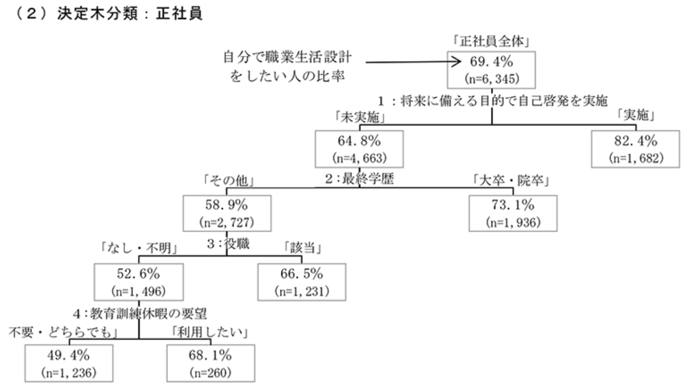
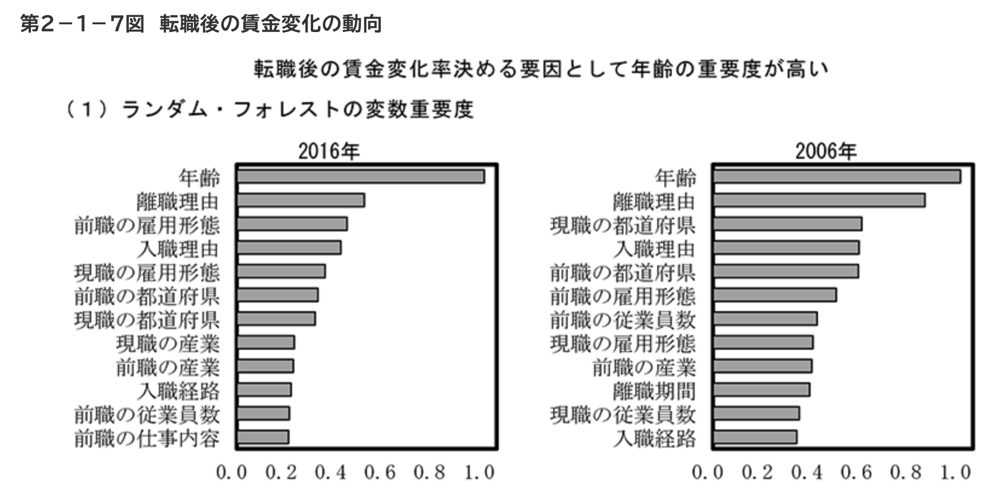

%%% 演算子
%%% 線型代数学%%% 複素解析学 %%% 集合と位相
%%% 形式言語理論 %%% Graph Theory
%%% 多様体 %%% 代数 %%% 代数的位相幾何学 %%% 微分幾何学 %%% 函数解析 %%% 積分論%%% Fourier解析 %%% 数値解析
%%% 確率論%%% 情報理論 %%% 量子論 %%% 最適化 %%% 数理ファイナンス
%%% 偏微分方程式%%% 常微分方程式 %%% 統計力学 %%% 解析力学
%%% 統計的因果推論 %%% 応用統計学 %%% 数理統計%%% 計量経済学
%%% 無限次元統計模型の理論%%% Banach Lattices
%%% 圏 %代数の圏 %Metric space & Contraction maps %確率空間とMarkov核の圏 %Sober space & continuous map %Category of open subsets %Category of sheave %Category of presheave, PSh(C)=[C^op,set]のこと %Convergence spaceの圏 %一様空間と一様連続写像の圏 %フレームとフレームの射 %その反対圏 %滑らかな多様体の圏 %Quiverの圏
%%% SMC %%% 括弧類%%% 予約語
%%% 略記
%%% 矢印類 $$
1 今回の内容
1.1 第1章第4節：ベイズ更新
1.2 第2章：意思決定
1.2.1 第2章1節「決定の木の作り方」
決定木の美点は，あり得るシナリオを全て書き出すことが出来ること にある (Smith, 2010, p. 29) が，それも箇条書きをするのではなく，木構造に書くことで，
- 計算機との親和性があり，自動発見に繋げられる．
- 最適なポリシーを執るための，期待値の計算が容易になる．
- 計算した結果から，自身の信念の構造を反省する契機になる．
などの利点が生まれる，という極めて古典的な技法 (Raiffa & Schlaifer, 1961) である．
これを用いて全てのシナリオと，それに対応する金銭的利得と確率を書き出し，各意思決定毎の期待値を計算することで，意思決定に役立てることができる．
1.2.2 第2章第2節「リスク中立的な行為者」
決定木の節には2種類ある (Taroni et al., 2014, pp. 35–36)
- Chance Node：どっちに転ぶか判らない事象（確率変数）を表す節．
- Decision Node：意思決定者が選択する行動を表す節．
教科書 (草野耕一, 2016) では 1.を \(\bigcirc\) で，2.を \(\square\) で表している．
この節で，「リスクに対する評価は人それぞれである」という点に注目し，金銭的利得とは別に 効用 の概念を導入し，効用に関する期待効用理論を紹介している．
1.2.3 コラム2-1：「期待効用理論」
2 決定木の応用
今回決定木を用いた意思決定の形式化の仕方を学んだが，この手法は共有されて最も輝く．
決定木は一般に （確率的）グラフィカルモデル の例であり，そのグラフとしての構造は機械との親和性が高く，「不確実性の下での意思決定が出来る人工知能・エキスパートシステムの作成」において重要な役割を果たすと考えられている．
2.1 人間同士のコミュニケーションツールとしての応用
2.1.1 世界銀行の太陽光発電＋蓄電池システムの導入へのイニシアティブ
世界銀行は 11月28日 に，途上国向けに大規模な太陽光発電＋蓄電システムを導入するために，どのようにプロジェクトを進めれば良いかの実践的なフレームワークを提供する報告書 (Jain et al., 2023) を公開した（プレスリリース）．
安定したエネルギー供給源の確保も多くの途上国にとって重要な課題であるが，太陽光発電システムを導入し，化石燃料への依存度を低減させることも（特に公的債務がかさんでいる国家では）同時に重要である．これを可能にするフレームワークを提供することが，本報告書の目的であるようである．
そのフレームワークは4段階
- 実行可能性の評価：長期的なコスト，既存電力網への統合の方法，需要予測などの予備調査．
- ビジネスモデルの選択：二部料金契約，容量契約，混合契約の3つを提示している．
- リスク配分の方法
- 競争入札による調達と実行
からなるが，特に 2.のビジネスモデルの選択について，多くのケーススタディを通じて得た「どの変数に応じてどのモデルが選択されるべきか」の知見を決定木の形にまとめている．

The report’s ready-to-use planning framework, the decision-making tree, sample business models, and the PPA template aim to streamline the adoption of solar-plus-storage projects that leverage private investments in countries where fuel-dependency is putting stress on limited public resources. (Jain et al., 2023)
報告書は、12月初旬にアラブ首長国連邦のドバイで開催される気候変動枠組み条約第28回締約国会議（COP28）で発表される。–プレスリリース
2.1.2 世界銀行の気候変動対策イニシアティブ
世界銀行は過去にも，気候変動対策の分野でも，同様の報告書と簡単な決定木（フローチャート）を発表している．
No generally accepted methodology for assessing the significance of climate risks relative to all other risks to water resources projects currently exists. This book puts forth a decision support framework in the form of a decision tree to meet this need. (Ray & Brown, 2015)
2.2 機械とのコミュニケーションツールとしての応用
木構造というのは計算機にとっても扱いやすい構造であり，決定木をデータから学習することで大いに我々の意思決定に活用することができる．これが現代において，機械学習技術が我々に与えてくれる希望の形である．
2.2.1 決定木学習
どう考えても，決定木は人間が書くよりも，データから学習する方が良い．これが 決定木（学習） (Breiman et al., 1984) である．
これは初め，回帰木 という名前で，単関数の線型和を用いたノンパラメトリック回帰手法として導入された．さらにアンサンブル法と組み合わせて精度を向上させたものが ランダムフォレスト (Breiman, 2001) と呼ばれる手法であり，現在極めて主流な手法となっている．
2.2.2 2017年度日本経済白書
内閣府が発表している日本経済白書の 2017年度版 の第二章では「多様化する職業キャリアの現状と課題」を扱っている．
第3節にて，リスキリングに関して調べられており，「自主的にキャリア設計をしたい人を決める変数は何か？」を決定木学習によって調べている．1
分析結果をみると（第2－3－7図（2））、正社員では、自主的に職業生活設計を考えている割合は、将来に備える目的で自己啓発を実施している人では8割となるが、実施していない人では65％と大きく下がる。だが、実施していなくても大卒・院卒であれば、職業生活設計の自主性割合は73％と増えるが、大卒・院卒以外では59％と大きく差が開く。–日本経済2017-2018

第1節では，転職市場の流動性を調べるにあたって，決定木を用いたブースティングにより，転職による賃金上昇の説明変数で，最も有力なものは何かを調べている．
まず、転職前後の賃金変化と関係の深い変数を調べるため、機械学習の手法を用いて、転職後に賃金が変化する人の特徴について整理する。ここでは機械学習の分野でよく使われている「ランダム・フォレスト」という手法を用いた。同手法は、説明変数の数が多くても対応でき、それぞれの説明変数の「重要度」を算出できることから、転職者が持つ多数の特徴のうち、どこに注目するのが適切かを把握するのに有用であると考えられる。–日本経済2017-2018
なお，結果は以下の通りである．

2.2.3 ランダムフォレストとは何か？
せっかくなので，日本経済 付記2-1 に付された簡潔な説明を引用する．
ランダム・フォレストは、学習データから「決定木」と呼ばれるツリー構造をしたグラフを大量に作成し、作成した決定木を元に多数決で最良の結果を導き出す方法である。–日本経済2017-2018
ランダム・フォレストはバギングと呼ばれるアンサンブル法の一種である．アンサンブル法 とは，性能の芳しくない小さな学習器をたくさん集め，これらを効率的に組み合わせることで全体として優れた性能を発揮するように組み合わせる，一段階高次元な機械学習手法であり，バギング とは「1つ1つは信頼出来ない出力でも，全ての平均を取れば性能が良くなる」という考え方に基づく手法である．2
特に決定木に対してバギングを使用した場合，その手法は ランダム・フォレスト と呼ばれる．これがうまくいく理由は，アンサンブルの過程にある．学習の段階では何も最適化しておらず，アンサンブルの段階で最適化されているのである．
アンサンブル法は極めてアドホックに感じられるかも知れないが，実践の場面では重要な技術であり，実際 Kaggle などのデータコンペティションでは最も広く見られる戦略の1つである．
3 ベイズによる意思決定支援
本書では取り上げられなかったが，意思決定の場面こそベイズ統計学の本領 と言えるものである．3
3.1 グラフィカルモデルの利用
本書で解説されている決定木による意思決定分析の先に，近年では Bayesian Network などの新しい道具が，確率的グラフィカルモデリング の分野から追加されている (Smith, 2010)．
These graphical methods help draw different aspects of a decision problem together into a coherent whole and provide frameworks where data can be used to support a Bayesian decision analysis. (Smith, 2010, p. viii)
これは，決定木によるイベントの表現では，イベントの間の依存関係を表現することが出来ない（現実を単純化し過ぎている）という欠点を，木構造を一般のグラフ構造に拡張することで解決したものである．4
構造は多少複雑になるが，視覚的な理解も引き続き用意である同時に，近年では多くの推論手法が提案されつつある (Sucar, 2021)．
3.2 法廷での利用について
(Smith, 2010, p. 20) では，法廷での DNA 証拠の使用をきっかけに，「確率」を用いた議論が法廷に導入されたことに触れて，ベイズの枠組みは次の意味で親和性が高いと論じている．そのことは，本勉強会で 第一章の内容 を学んできた皆さんには首肯いただけることだろう．
- ベイズ統計学は演繹的論理の拡張であり，厳密で論理的なフレームワークを提供してくれる．
- どうしてその意思決定に至ったかを，透明で一貫性のある方法で説明することができる．
3.3 法科学への応用
Bayesian Network は法科学への応用が進んでいる．5
A problem that arises in a courtroom, affecting both lawyers, witnesses and jurors, is that several pieces of evidence have to be put together before a reasoned judgement can be reached: as when motive has to be considered along with material evidence. Probability is designed to effect such combinations but the accumulation of simple rules can produce complicated procedures. Methods of handling sets of evidence have been developed: for example Bayes nets (…). There is a fascinating interplay here between the lawyer and the scientist where they can learn from each other and develop tools that significantly assist in the production of a better judicial system.–Foreword by Dennis Lindley (Aitken & Taroni, 2004, p. 24)
References
Footnotes
決定木学習について，付記2-1 にて「決定木による分類は、説明変数によるサンプルの分割を繰り返しながら徐々に分類目的（職業設計を自分で実施）の予測誤差を小さくしていく手法である。説明変数間の相互作用を考慮した分類が可能であり、複数の説明変数で分割していくことで職業設計を自分でしたい人の比率が高まる（低まる）樹形図（tree）が作成できる。」と述べられている．↩︎
Bootstrap aggregating の略である (Hansen, 2022, p. 927)．↩︎
(Smith, 2010, p. 8) で，近年の決定分析の文脈でベイズの手法が興隆している理由の一つに，ベイズ計算手法の発展を挙げている．↩︎
(Smith, 2010, p. 59) 2.8節も参照．↩︎
(Taroni et al., 2014), (Smith, 2010, pp. 34–37) 2.3.1節↩︎